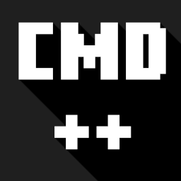

Commands ++
Commands++ est un Addon révolutionnaire pour Minecraft Bedrock développé par Batpolygon. Exploitant la toute dernière version du Script API natif, il comble les plus grands manques de la version Bedrock par rapport à Java en introduisant de vraies commandes slash avec autocomplétion, des générateurs d'items sur-mesure, des menus interactifs, la détection des touches clavier et un contrôle Redstone chirurgical par comparateur !
Compatible Minecraft Bedrock 1.21.50+ (Activer les Beta APIs dans les paramètres du monde).
Démonstrations & Tutoriels Vidéo
Découvrez les fonctionnalités de Commands++ en action à travers la playlist officielle.
Pourquoi Commands++ ?
Pas de faux préfixes de chat : de véritables commandes slash reconnues par Minecraft, utilisables aussi bien par les joueurs que par les blocs de commande.
Chaque argument est guidé par les listes de suggestions officielles de Minecraft : items, sélecteurs d'entités, coordonnées et presets.
Toutes les commandes de test renvoient un état de succès ou d'échec natif : allumez et éteignez des comparateurs selon des conditions précises.
Créez de vraies interfaces graphiques personnalisées avec boutons, icônes d'items et commandes liées, sauvegardées à vie dans votre monde.
Invoquez des bots humanoïdes animés avec le modèle de Steve, capables de sauter, vous suivre, vous protéger ou patrouiller en zone.
Gestion propre de l'inventaire : si un conteneur est plein lors d'une distribution d'objet, l'item est déposé au sol pour éviter toute disparition.
Wiki des Commandes (Documentation Officielle)
/helpcommands Guide interactif intégré
Affiche directement dans le chat l'index de toutes les commandes de Commands++ ou le guide complet d'un module spécifique.
- Sans argument : Affiche l'index de toutes les commandes du pack avec leurs descriptions courtes.
- Avec nom de commande : Affiche la fiche technique détaillée (syntaxe, options et exemples).
Exemples :
/playerinput Détection des touches & clics physiques Redstone ✔
Capte en direct si un joueur maintient une touche enfoncée sur son clavier, sa manette ou son écran tactile (polling de bouton physique sans délai).
- jump : Capte si le bouton de saut est enfoncé (Espace, bouton A, etc.), même si le joueur ne saute pas physiquement.
- sneak : Détecte si la touche d'accroupissement est maintenue.
- attack : Détecte un clic gauche (frappe sur une entité ou un bloc).
- interact : Détecte un clic droit (interaction bloc/entité, consommation d'un aliment, utilisation d'un arc/bouclier).
- place : Détecte la pose d'un bloc.
- break : Détecte la destruction d'un bloc.
Redstone : Dans un Command Block à répétition, le comparateur branché reste allumé tant que l'input est actif, et s'éteint dès qu'il est relâché.
Exemples :
/sense Détecteur de posture, combat & dégâts Redstone ✔
Analyse l'état physique, les actions de combat ou les blessures en cours sur n'importe quel joueur ou créature.
- attack : L'entité vient de donner un coup au corps-à-corps ou avec un projectile.
- hurt : L'entité subit des dégâts physiques (coups, flèches, explosions, chutes).
- hurt_magic : L'entité subit des dégâts magiques ou de potion (poison, wither, dégâts instantanés).
- sprint / walk / idle : Détecte si la cible court, marche ou est totalement immobile.
- jump / fall : Détecte si la cible s'élève dans un saut ou tombe dans le vide.
- swim / in_water / on_ground / climb / glide / sleep / burning.
Redstone : Maintient un signal comparateur de 500 ms (10 ticks) lors d'un coup ou d'une blessure, idéal pour déclencher un circuit sans perte.
Exemples :
/interface Menus UI modulaires avec boutons
Créez et personnalisez des interfaces graphiques pop-up natives affichant des boutons cliquables avec icônes. Toutes les interfaces sont enregistrées dans la mémoire permanente de votre monde.
- create : /interface create <id> "<titre>" (Crée le menu).
- button : /interface button <id> <btn_id> "<texte>" [icone] (Ajoute un bouton).
- event : /interface event <id> <btn_id> "<commande>" (Associe une action au bouton).
- open : /interface open <id> [joueur] (Ouvre l'interface à l'écran).
- list & remove : Pour afficher ou supprimer les interfaces existantes.
Exemple complet d'une boutique :
/customobject Créateur d'items personnalisés
Permet de distribuer des objets d'une complexité impossible en Bedrock vanilla : nom coloré, lore multiligne, presets d'enchantements et verrouillage d'inventaire.
- item : Tous les items du jeu proposés avec l'autocomplétion native.
- lore : Utilisez
\npour créer des descriptions sur plusieurs lignes sous l'item. - enchants : Presets instantanés (
god_sword,god_armor,god_tool,god_bow) ou enchants libres (ex:sharpness:5,unbreaking:3). - lock :
keep: L'item reste dans l'inventaire même si le joueur meurt (keepOnDeath).inventory: Impossible de jeter l'item ou de le placer dans un coffre.slot: Verrouille l'item sur son emplacement d'origine.
Exemples :
/moveitem Déplacement, échange & duplication de slots Redstone ✔
Déplace, échange ou clone des objets entre deux slots d'inventaire, que ce soit pour le joueur ou vers un conteneur tiers.
- swap (par défaut) : Échange les deux slots en toute sécurité sans risque d'écraser ou de perdre d'item.
- copy : Clone l'item du slot de départ vers le slot d'arrivée en écrasant son contenu (duplication).
- Repères de slots :
0 à 8= Barre rapide (Hotbar) |9 à 35= Inventaire principal.
Exemples :
/floatingtext Textes flottants & hologrammes 3D Redstone ✔
Fait apparaître des hologrammes 3D permanents, lumineux et visibles sous tous les angles sans corps visible, sans gravité et sans collision.
- create : /floatingtext create <id> "<texte>" [pos] (Supporte les couleurs
§et les retours à la ligne\n). - edit : Modifie le message d'un hologramme existant en temps réel.
- remove & removeall : Supprime un hologramme par son ID ou vide tous les hologrammes d'un coup.
- list : Affiche la liste des hologrammes actifs avec leurs coordonnées et dimensions.
Exemples :
/mimicplayer Faux joueurs bots (IA & Animations) Redstone ✔
Fait apparaître et contrôle un bot humanoïde Steve doté du modèle officiel de joueur, capable d'escalader les blocs (auto-step) et d'exécuter des comportements d'IA natifs.
- spawn : /mimicplayer spawn <nom> [x] [y] [z] (Invoque le bot sur vous ou au-dessus du Command Block).
- behaviour : /mimicplayer behaviour <nom> <comportement> [combine: true/false]
- Comportements :
roamaround,follow,bodyguard,attack,chase,panic,lookat,sneak,stop. - Avec
combine: true, le bot peut cumuler le suivi et la protection (il vous suit, défend contre les monstres et reprend sa marche !).
- Comportements :
- stat : /mimicplayer stat <nom> <stat> <valeur> (Modifie sa taille
scalede 0.1 à 10, sa vie jusqu'à 1000 PV, sa vitesse ou sa force).
Redstone : S'active en comparateur quand le bot exécute activement sa tâche (ex: il marche en roamaround), et s'éteint lorsqu'il attend (idle).
Exemples :
/testforchat Analyseur de chat pour circuits Redstone Redstone ✔
Recherche un mot ou une phrase précise dans le chat pour activer instantanément des mécanismes Redstone.
- contains :
true(cherche si le mot est présent dans une phrase) oufalse(recherche le mot/phrase exact). - latestOnly : Si mis à
true, n'analyse que le tout dernier message envoyé. Dès qu'un autre message arrive dans le chat, le comparateur s'éteint immédiatement.
Exemples :
/attribute Gestionnaire universel d'attributs
Modifie ou consulte en temps réel les propriétés physiques et les modificateurs de n'importe quelle créature ou joueur.
- Attributs disponibles :
health,speed,damage,resistance,regeneration,absorption,jump_boost,invisibility,fire_immunity,water_breathing,freeze,levitation,fire,name,clear. - Mode Consultation : Laissez la valeur vide pour afficher l'état actuel de l'attribut dans le chat.
Exemples :
Historique des Mises à Jour
Version 1.0.0 [30/10/2026]
Lancement Officiel de Commands++
Par Batpolygon — Déploiement initial complet sous Script API 2.11.0-beta.
- Ajout du système de vrais Custom Commands natifs avec autocomplétion C++ complète.
- Module /helpcommands : système d'aide et documentation intégrés.
- Module /playerinput : détection instantanée de l'appui physique sur les touches et clics (jump, sneak, attack, interact, place, break).
- Module /sense : détection d'états physiques, de postures et écoute des combats en temps réel avec impulsion Redstone de 500 ms.
- Module /interface : création et stockage persistant de formulaires avec boutons personnalisés via
@minecraft/server-ui. - Module /customobject : distribution d'items complexes avec lore multiligne
\n, presets d'enchantements et verrouillage (keep, inventory, slot). - Module /moveitem : déplacement sécurisé de conteneurs avec modes
swap(sans perte) etcopy(écrasement). - Module /floatingtext : hologrammes 3D persistants basés sur une géométrie pure sans corps ni hitbox.
- Module /mimicplayer : faux joueurs Steve avec IA natrice, franchissement fluide de blocs (auto-step) et superposition de comportements.
- Module /testforchat : analyseur de chat rétroactif ou instantané pour automatisation Redstone.
- Module /attribute : gestionnaire universel de statistiques et d'effets pour toutes les entités du monde.